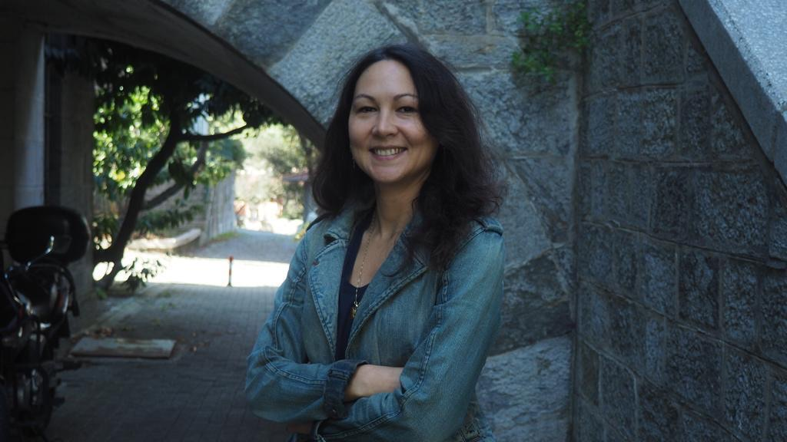
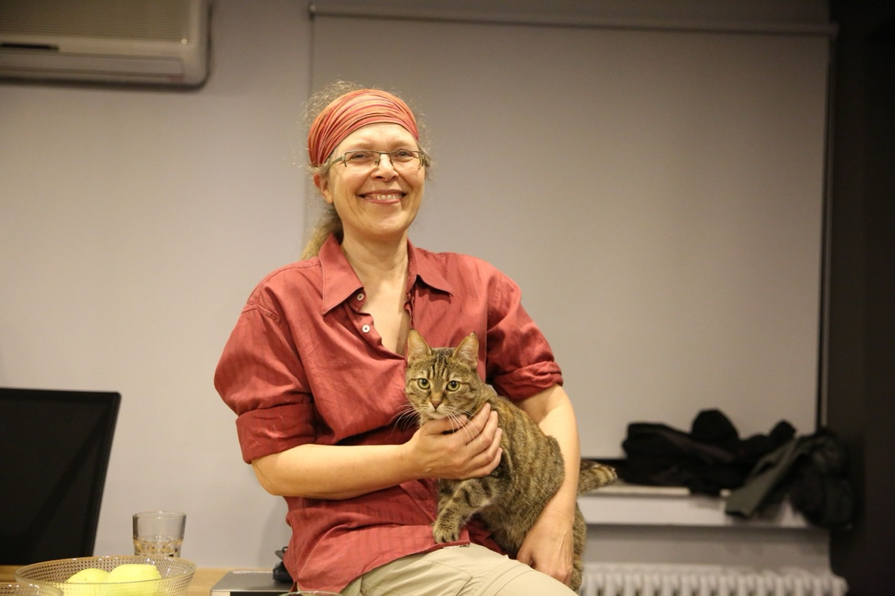
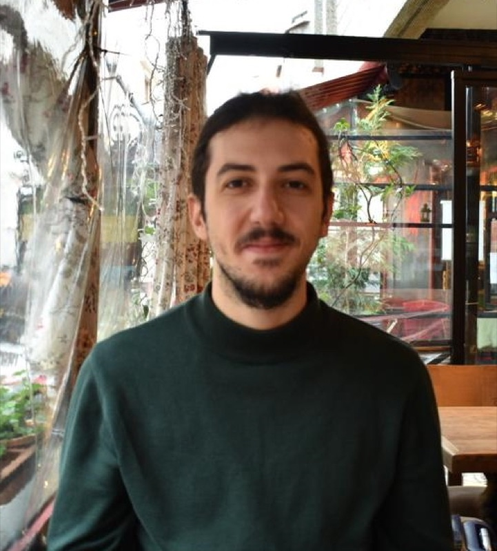
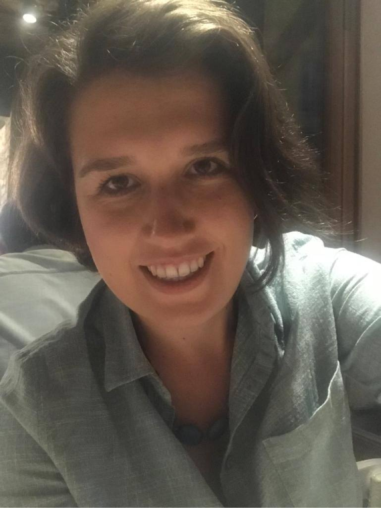
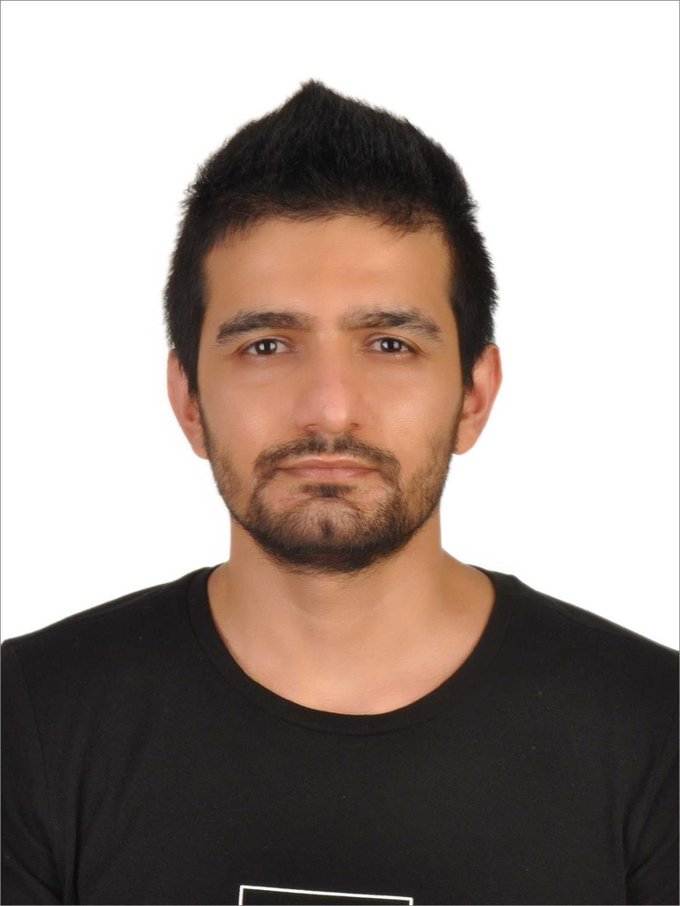
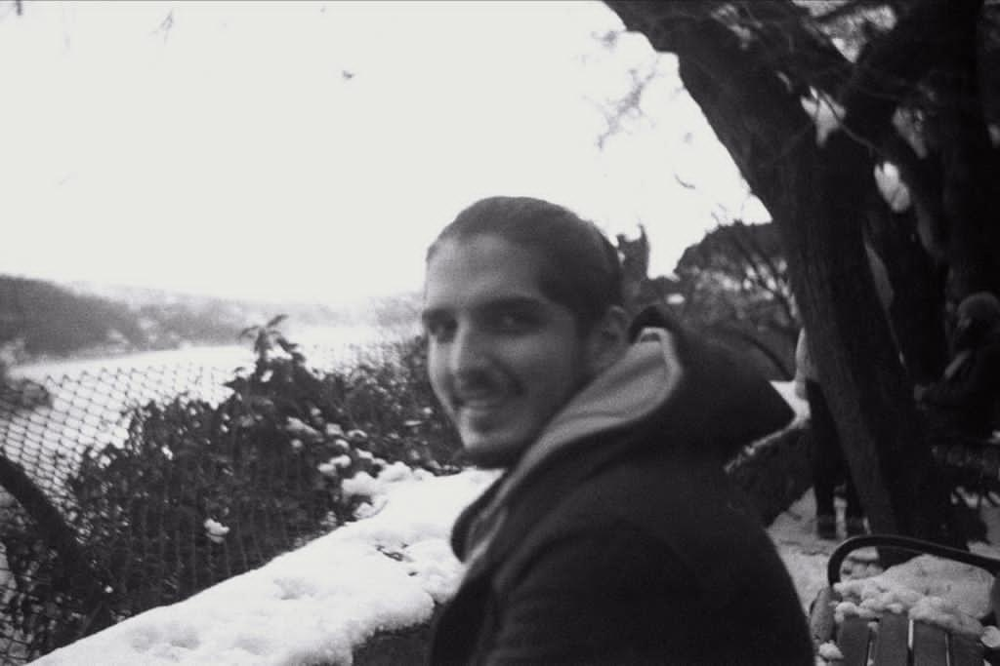
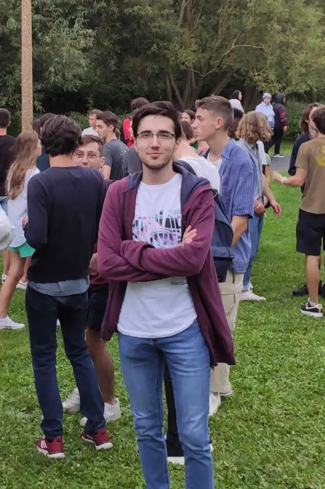
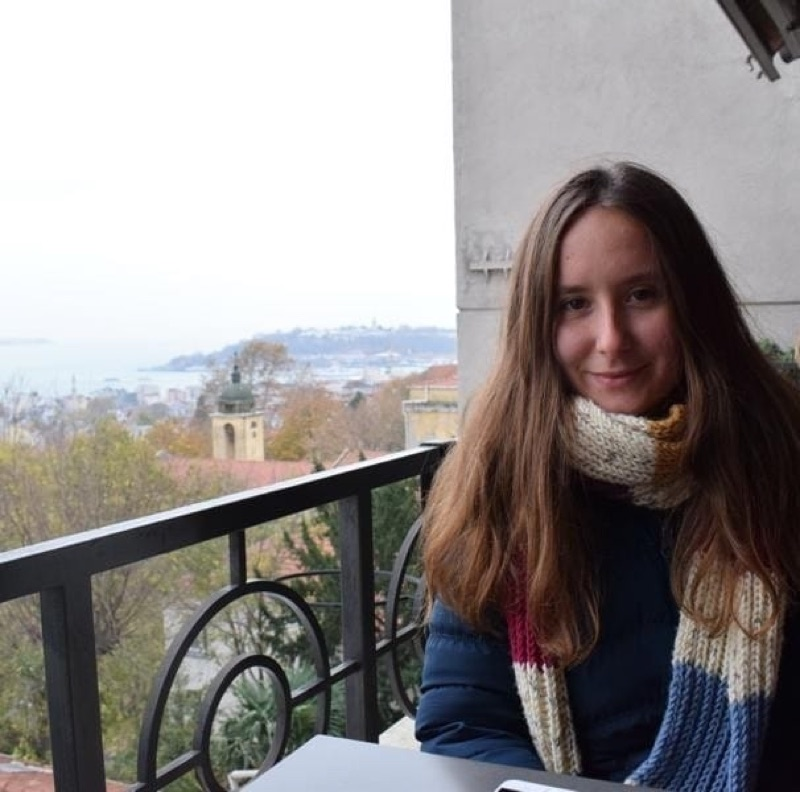
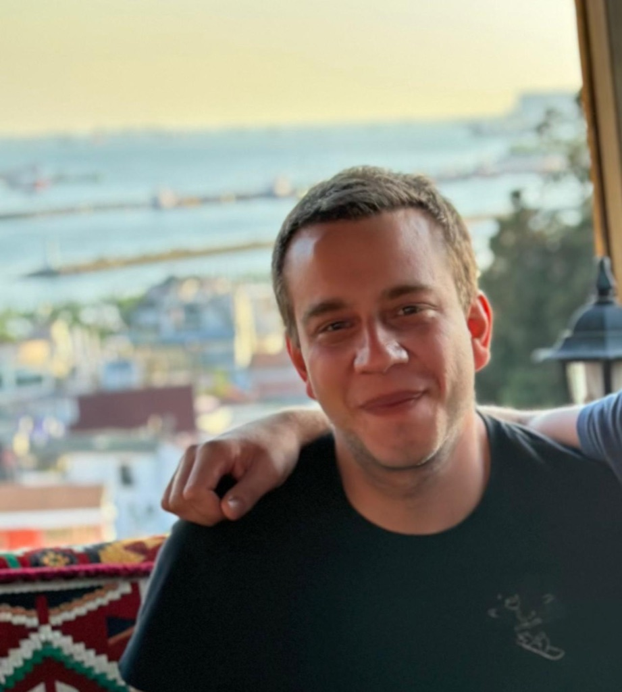
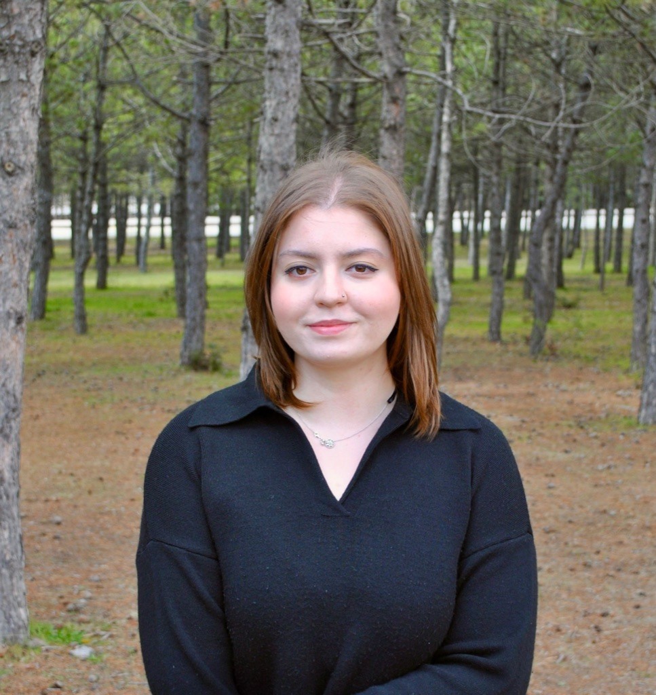

Project Team
We are Dia-Pol project team with a wide range of skills and experience. We look forward to sharing our knowledge with you.

Basak Taraktas
I am an Assistant Professor of Political Science at Bogazici University. My research centers on collective action and opinion dynamics.
Email me: basak.taraktas@boun.edu.tr
Twitter: BasakTaraktas

Suzan Uskudarlı
I am a computer scientist who is interested in the social impacts of computation, which covers multi discipliniary fields including social semantic web, knowledge representation, complex and social network analysis, computer mediated cooperation & communication, virtual/digital environments, virtual reality, human-computer interaction (HCI). My present focus areas are semantic web, social network analysis, virtual communities, visual languages, and digital inclusion.
I joined the Computer Engineering Department of Boğaziçi University in 2005 after working in California subsequent to receiving my PhD in University of Amsterdam related to the algebraic specification of visual lanugages.
Email me: suzan.uskudarli@boun.edu.tr
Twitter: uskudarli
Cihan Duran
I am Cihan. I am a master student in Political Science and International Relations department and this is my first year. I am interested in computational social science and populist movements.
I love the trilogy of the Lord of the Rings and I’ve watched it so many times. I am always open to talk about it 🙂

Özgür Togay
I studied Political Science & International Relations and Sociology at Boğaziçi University, and I’m currently pursuing a master’s degree in Sociology. I’m mainly interested in polarization in social media and writing my thesis on the subject of the dimensions of polarization in the Turkish twittersphere. I mostly use Python but have some experience with R.

Basak Bozkurt
I am a DPhil student at the University of Oxford interested in gendered dynamics and discrimination in the information and communications technology sector.
I have a bachelor’s degree in Computer Engineering and a double major degree in Political Science and International Relations from Yildiz Technical University. I also hold master’s degrees in Sociology and Political Science.

Ömer Taşdemir
I graduated from Political Science and International Relations at Boğaziçi University, and now a first-year M.A student at the Department of Management Information Systems at Boğaziçi University. My research interests include machine learning. I also love martial arts and have three black belts.

Orkun İrsoy
I recently received my Master’s degree in Industrial Engineering from Boğaziçi University in Turkey. Currently, I am working as a research and teaching assistant in the same department. During my studies, I was exposed to a wide range of application areas, but I am particularly passionate about addressing social issues from a complex systems perspective. In terms of methodology, my research interests intersect data science, network science, and simulation. I am often intrigued by problems prevalently addressed in social sciences that currently lack robust and effective solutions.

Eray Umut DEMİR
Hi, I am a third year Political Science and International Relations student at Bogazici University interested in security studies, diplomacy, and regional integration.
My aim is to further study European Affairs, focused on the European Integration Project and the increasing crises it has to face both currently and in the future.
I also am improving my skills in coding (R) and statistics, preparing myself by engaging frequently with the computational social sciences branch. Apart from these, I am interested in history, philosophy, and etymology (especially Latin and Greek word origins).
The next step in my life is to pursue a binding diplomatic career that harnesses my interests and fulfils me meanwhile benefitting those I can reach.

Asena Karolin Özdemir
Hi there! I am Asena, a senior Computer Engineering student at Boğaziçi University. I like dancing Salsa and Bachata, and swimming. I am addicted to Tea and Coffee, as it gives me energy for coding 😊
Email me: asena.ozdemir@boun.edu.tr
Linked-in: https://www.linkedin.com/in/asena-karolin-ozdemir/

Cihan Hulagu
I’m Cihan, I studied Psychological Guidance and Counseling at Bogazici University. I’m interested in social network analysis. I study co-following relations on Twitter to understand the motives behind how we collect information.

Doğa Karadenizli
Hello all, I am Doğa, a senior in International Relations at Bilkent University with an interest in sociology. My goal is to pursue a master’s degree in sociology, focusing particularly on social conflict and social change. In addition to my academic interests, I am passionate about music and enjoy collecting CDs and records.